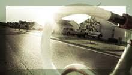
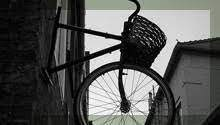

Fixed Gear Forever
16 April 2016
The veloheld combines minamlist design with superb quality. Devoid of excessive graphics and gear shift components, the veloheld product range delights us with its beauty and simplicity...
More Articles

On the Road: from the fixed gear fanatic's point of view

On the Road: from the fixed gear fanatic's point of view